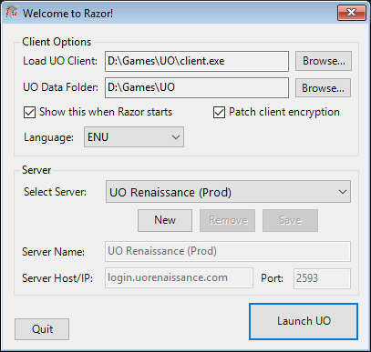

Razor
Razor, UO:Renaissance Community Edition (UOR:CE), is a free tool designed to help with simple tasks while playing Ultima Online.
For more information about this version of Razor, the history, release notes and downloads links please visit http://www.uor-razor.com
Installing Razor
First, download Razor. Unlike previous versions of Razor, this version doesn't use the Windows Registry or %AppData%\Razor to store configuration, macros and profiles. In other words, it's portable. To install, follow these simple steps:
- Download the latest release of Razor at the main site.
- Extract the zip into any location (ie:
C:\UO\Razor) - (Optional) If you have an existing version of Razor, copy the Profiles and Macros folders from
%AppData%\Razorinto the folder you extracted the zip above to. If you have custom counters, also copycounters.xmlover.
Note: All macros should work from previous version, with the exception of macros using targeting created in Razor 1.0.14.x. You will need to re-add those target hotkeys to your macros.
- Right-click on the Razor shortcut or Razor.exe, go to Properties. On the Compatibility tab, select Run this program in compatibility mode for and select Windows XP SP2. Also select Run this program as an administrator
- Run Razor either via the shortcut or clicking the Razor.exe directly.
- Razor should prompt to Run As Administrator. You must allow this for Razor to function correctly.
Upgrading Razor
Since Razor is portable, upgrading it is a copy/paste exercise.
- Download the latest release of Razor at the main site.
- Extract the zip into your existing Razor location (ie:
C:\UO\Razor), overwritting all files, with the exception of two:- counters.xml - This is the default counters file used to display items in your titlebar. If you've added any new counters, they would be lost if overwritten.
- Razor.exe.Config - This is the config file that stores your UO path, server list, etc. Copying this over will overwrite those settings.
- Open Razor back up and log back in.
Welcome Screen
The first time you run Razor, it will open with a Welcome Screen and give you an option to import your exising

Browse to your client.exe that you want to run along with Razor. Set the UO Data Directory (most likely the same path as your client.exe). Either use the pre-configured servers or enter your own server in the list here.
You can also edit Razor.exe.Config and add your own servers or just enter the server name and port in this format: server.name.com,port
Click OK to open Razor and Ultima Online.
Configuration File
The Welcome Screen will control some of these settings, but some settings can only be changed by editing .\Razor.exe.config.
<appSettings>
<add key="PatchEncy" value="1" /> <!-- Patch client encryption -->
<add key="ServerEnc" value="0" /> <!-- Use OSI encryption -->
<add key="MaxOrganizerAgents" value="20" /> <!-- Override the default Organizer agent count -->
<add key="MaxBuyAgents" value="10" /> <!-- Override the default Buy agent count -->
<add key="MaxRestockAgents" value="10" /> <!-- Override the default Restock agent count -->
<add key="ImportProfilesAndMacros" value="false" /> <!-- If true, will import macros and profiles from %AppData%\Razor -->
<add key="LastProfile" value="Test" /> <!-- Last profile used in Razor -->
<add key="LastServer" value="test.uorenaissance.com" /> <!-- Last server connected to in Razor -->
<add key="LastPort" value="2597" /> <!-- Last server port connected to in Razor -->
<add key="LastServerId" value="1" /> <!-- Index of the server selected in the dropdown -->
<add key="ShowWelcome" value="1" /> <!-- Show the Welcome Screen when loading Razor -->
<add key="UOClient" value="D:\Games\UO\client.exe" /> <!-- Location to Ultima Online client -->
<add key="UODataDir" value="D:\Games\UO" /> <!-- Location to Ultima Online data directory -->
</appSettings>
<!-- You can define a list of servers here by adding values between <Servers></Servers> -->
<Servers>
<add key="Custom Server" value="server.someserver.com,2593" />
</Servers>
About This Documentation
The documentation found here is an aggregation of data and resources gathered across the Internet including UO:Renaissance's Guide to Razor.
This documentation will give you a general overview of Razor and how to use it. If any information is missing or incorrect, please contact me.